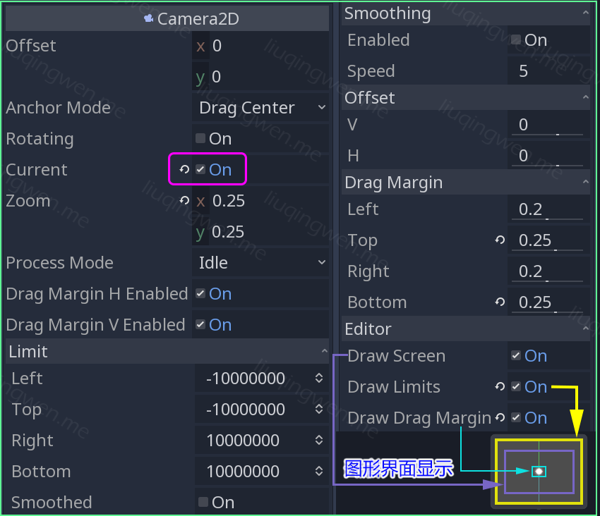
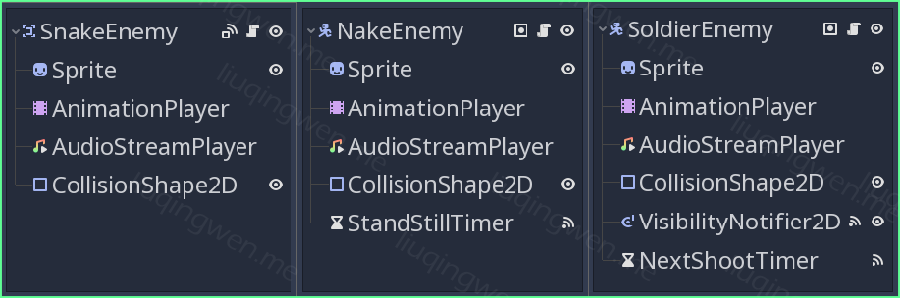
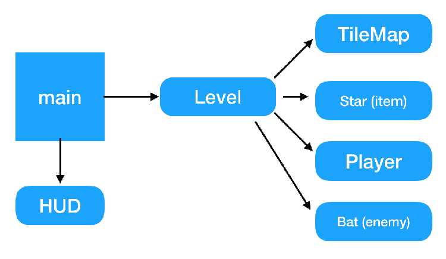
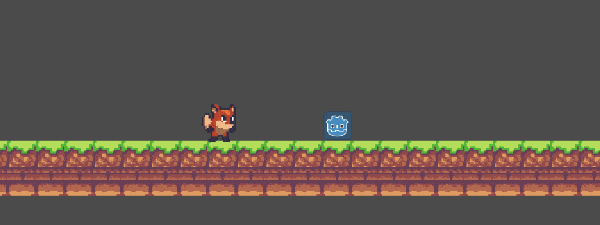

Godot3游戏引擎入门之十三：实现玩家的跳跃功能并完成一个平台小游戏（下）

一、前言
本文为上一篇文章的续篇，在上一节中我们一起讨论了 Godot 中平台游戏玩家跳跃功能的实现方法，并使用到了本次小游戏中，那么本节内容主要是分享这个平台小游戏的基本结构和制作过程。游戏运行效果如下：

游戏中的图片资源主要来源于 OpenGameArt.org 网站： https://opengameart.org/content/a-platformer-in-the-forest ，游戏中的部分音乐资源也是在该网站中找到的，其他部分图片和音乐是我七零八凑拼起来的，为了顺利完成一个小游戏，找资源也花费了我不少时间，在这里建议大家有时间可以学习一些基础的美术知识吧。
本次两篇文章所详细讲述的内容包括以下部分：
- 重力加速度知识和简单的跳跃实现方法（上）
- 二次跳跃的实现（上）
- 精确高度的跳跃实现（上）
- 游戏场景结构与主要代码
- 三种敌人的行为和实现
- 其他的一些效果介绍
- 问题和总结
主要内容：平台游戏的制作解析
阅读时间： 10 分钟
永久链接： http://liuqingwen.me/blog/2019/01/26/introduction-of-godot-3-part-13-the-player-jump-implementation-and-make-a-platform-game-part-2/
系列主页： http://liuqingwen.me/blog/introduction-of-godot-series/
二、正文
本篇目标
- 平台游戏中的玩家场景
- 游戏中的三种敌人实现
- 游戏中的其他部分简述
- 问题与总结
在上一篇文中我们花了大篇幅探讨平台游戏的最核心部分：玩家跳跃功能的实现，接下来所要讨论的游戏中其他场景相对来说就非常简单了，特别是在结合本系列文章之前的两个小游戏的基础上，我觉得对于新手而言也不会有很大的难度，而游戏中的相关设计，额外小功能的实现，游戏场景的丰富程度等等这些还是需要自己好好打磨的。正因为如此，这些可以扩展、发挥的部分也就留给大家去思考实现啦，我仅仅是希望做到抛砖引玉的作用吧！
玩家场景
玩家还是那个玩家，节点还是那些节点*。嗯，相比之前的游戏，玩家场景的结构变化不大，当然也有不同之处，玩家场景中最重要的变化是多了一个非常重要的节点： *Camera2D 摄像机节点。这个节点其实非常好理解，特别是在 3D 游戏中更加常用，而且很多游戏中会同时拥有多个摄像机。

Camera2D 节点的一些基本参数很好理解，这里例举几个重要的参数说明如下：
Current设置为当前摄像头，这个参数非常重要，不勾选摄像头将不起作用Zoom摄像机镜头的缩放变焦，值越小范围越小，图片的显示也就越大Limit摄像机的最大活动范围，摄像头移动后的位置不会超出该限制Smoothing/Speed开启摄像头跟随平滑移动，可以设置移动的速度Drag Margin摄像头不跟随移动的尺寸范围，超出该范围摄像头开始跟随运动Editor显示摄像机相关范围图形界面，不会在游戏中显示，用于调试
在属性面板中，你会发现 Limit 下的默认值设置的有点荒谬，当然这在一般的游戏中并没有什么问题，你也可以手动设置合理的值，把摄像头的最大活动范围固定在游戏的主场景范围内，另外 Editor 菜单中的几个调试工具建议都开启查看，参考上图，其中黄色区域表示摄像机活动范围，紫色*表示屏幕尺寸或者视窗 *Viewport 的大小，蓝色表示玩家在此范围内摄像机不会发生移动，超出范围摄像机跟随移动。
除此之外，我在摄像机节点下添加了一个带脚本的空节点，脚本代码简单地实现了摄像头抖动效果，实现原理非常简单，有兴趣的朋友可以下载源码看看。整个玩家的场景结构如下图：

UI 场景结构图也展示在上面了，场景的根节点是一个 CanvasLayer 节点，它的特点是能够忽略节点的渲染排序，直接显示在所有层的最上层，它的子节点又包含 3 个 TextureRect 节点，用于显示玩家的血量。
在这里我建议：如果你的 UI 场景比较简单，完全可以把 UI 场景直接添加到玩家场景中作为一个直接子节点，更加方便简洁！ :smiley:
敌人场景
这个平台游戏中，除了我们的主角——玩家子场景稍显复杂外，其他稍微复杂的节点就是敌人场景了，我在游戏中制作了 3 种行为各异的敌人：光头（ NakedEnemy ）、军人（ SoldierEnemy ）以及蛇（ SnakeEnemy ）。

从场景的结构可以看出来，其中两个敌人的场景根节点使用的是 KinematicBody2D 节点，而怪物蛇使用的则是 Area2D 节点，它们具有的共同行为是：左右反复巡逻。而不同的行为特点有这么几个：
- 怪物蛇只巡逻，没有主动攻击的能力，场景实现代码也是最简单的
- 光头在巡逻过程中如果与玩家发生碰撞会立刻进行攻击，之后继续巡逻
- 军人无主动攻击的能力，但会在巡逻时会往前方发射多颗子弹
怪物蛇 SnakeEnemy 场景的实现代码最简单，代码如下：
1 | extends Area2D |
从代码中可以看出来，怪物蛇在游戏中是不会检测与地面之间发生的碰撞的，所以在游戏关卡中，添加蛇场景的时候，必须把它的位置手动放置在地面上，否则会出现“蛇在空中移动”的现象。 :joy:
接着是光头敌人 NakedEnemy 场景的实现代码：
1 | extends KinematicBody2D |
这里根节点使用 KinematicBody2D 的好处是可以调用 move_and_slide 方法移动敌人，在代码中我给敌人添加了重力加速度，所以放置敌人的时候可以放在空中不需要贴着地面，但是这里的重力加速度值是手动设置的，并没有按照上一篇文章中讲的那样进行计算，也是为了方便简洁，够用就可以。
军人场景 SoldierEnemy 的代码与 NakedEnemy 的代码非常相似，这里我就不贴出来了，有兴趣的朋友可以到我的 Github 仓库下载源码查看。
游戏中其他场景包括：攻击效果子场景、敌人子弹、梯子、宝箱（恢复生命值）、木盒子（门）等这里不作一一介绍，结构和代码都很简单，在本系列之前的文章中都陆陆续续讨论过。
问题总结
总结一下这个游戏的开发过程。其实做任何一个游戏，不论游戏开发有多复杂，它的结构设计都是很重要的。比如设计这么一个简单的平台游戏，你需要考虑玩家所应有的一些功能、敌人的行为和种类、关卡地图的设计、游戏中互动元素的添加、甚至一些简单的剧情等等。设计完成接下来就是考虑如何使用游戏引擎来完成制作了。
本次小游戏的结构设计可以参考下图：

这张图片场景名称并不相同，它是另一个游戏的场景结构，图片来源于 Thingsmatic 的一篇博客文章： Making a 2D platform game with Godot 3.0 ，尽管场景名字不同，但是总体结构是相似的，大家可以参考参考。
再来说说本次 Demo 中的一个非常重要的问题或者 BUG ：玩家在敌人（ KinematicBody2D ）身后挨着走也不会受到攻击！也就是说，玩家可以从背后推着敌人走而敌人并不能检测到与玩家之间的碰撞，从而玩家可以安然无恙地“躲过一劫”！

如何解决这个问题呢？至少有三种最直接的方式：
- 添加 Area2D 子节点用于检测碰撞
- 使用 Raycast 射线节点检测碰撞
- 使用
Physics2DDirectSpaceState.intersect_ray()方法检测碰撞
为了让游戏更加简单易懂，我并没有在游戏中解决这个 BUG ，不过我会在后续文章中讨论这个问题，以及游戏中常用的 FSM 有限状态机制我想也会谈到，有兴趣的朋友可以自己先探索。 :smiley:
三、总结
小游戏算是完成了，但是还有太多不足之处，大家可以充分发挥自己的聪明才智，把你心目中的游戏打造的更加好玩、更加有特色，这里我能想到的一些可以在 Godot 中为游戏增光添彩的功能有：
- 添加单边碰撞体作为地面
- 玩家移动时的灰尘特效
- 给玩家添加无敌状态
- 添加空中移动平台
- 给敌人添加 AI
- 更多交互元素、更好的关卡设计等
本篇的 Demo 以及相关代码已经上传到 Github ，地址： https://github.com/spkingr/Godot-Demos ， 这应该是春节前的最后一篇文章，原创不易，希望大家喜欢，我们 2019 新年见！ :smile:
我的博客地址： http://liuqingwen.me ，我的博客即将同步至腾讯云+社区，邀请大家一同入驻： https://cloud.tencent.com/developer/support-plan?invite_code=3sg12o13bvwgc ，欢迎关注我的微信公众号：